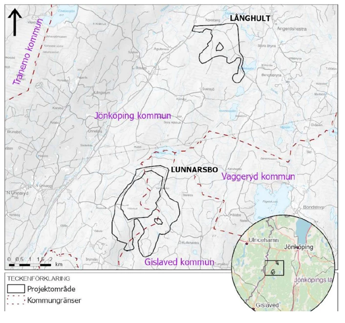

Extra på webben
Jag började med en fråga
Hur många av 46 landbaserade vindkraftsprojekt stoppades av kommunerna under 2025? Gissa innan du läser vidare.
Källa: Green Power Sweden, 2026 (se referenslistan). Andelen gäller projekt, inte verk. Green Power Sweden är en branschorganisation.
Abstract #
Sverige har sedan 2026 lag (2026:1113) om intäktsdelning från vindkraftsanläggningar (i rapporten kallad intäktsdelningslagen). Intäktsdelningslagen (2026:1113) ger närboende en årlig ersättning och syftar till att öka den lokala acceptansen för landbaserad vindkraft. Rapporten analyserar den som styrmedel ur ett utbudsperspektiv och frågar om den är utformad så att den kan öka både acceptans och legitimitet. Forskningen stöder att ekonomisk kompensation kan öka acceptansen hos tveksamma, men att procedur, information och inflytande väger tungt för att utfallet ska uppfattas som legitimt. Utformningen har brister på just dessa punkter: informationen om ersättningen får lämnas först när anläggningen tas i drift, rätten måste anmälas varje år, ett tak kan sänka ersättningen och ingen myndighet följer upp utfallet. Rapporten föreslår tre förbättringar: besked om beräknad ersättning före kommunens beslut, automatisk rätt via fastighetsregistret och ett register med uppföljning hos Energimyndigheten. Förslaget är administrativt och informativt, med ett inslag av forskning, och läggs ovanpå ett ekonomiskt styrmedel. Rapporten behandlar inte stödet till kommunerna eller rätten till inlösen. Vindparken Långhult/Lunnarsbo och Önnerupsprojektet används som illustrationer. Någon effekt kan ännu inte mätas, eftersom inga utbetalningar har hittats, så analysen prövar utformningen.
1. Inledning #
Under 2025 stoppades 93 procent av de landbaserade projekten (43 av 46) av kommunerna, mot i genomsnitt 68 procent 2021–2024 (Green Power Sweden, 2026). Vindkraft byggs inte där den är lönsammast, utan där den får tillstånd och kommunens tillstyrkan. Enligt 16 kap. 4 § miljöbalken (1998:808) krävs kommunens tillstyrkan för att tillstånd ska kunna ges. Kommunernas beslut har kopplats till boendes attityder och upplevd rättvisa i fördelningen av vindkraftens nyttor och kostnader (Lindvall, 2023). Lokal acceptans är därmed en förutsättning för utbyggnaden.
Utbyggnaden av landbaserad vindkraft är en del av omställningen mot fossilfri elproduktion, och elanvändningen väntas öka, bland annat genom elektrifiering av industri och transporter. Sedan 2023 är målet 100 procent fossilfri elproduktion till 2040 (bet. 2022/23:FiU21).
Acceptans handlar om människors inställning till vindkraft. Legitimitet handlar om huruvida etableringen och beslutsprocessen uppfattas som rättvisa och berättigade, och en australisk pilotstudie visar att upplevd rättvisa i processen påverkar hur legitimt utfallet uppfattas (Gross, 2007). Stöd för vindkraft i allmänhet innebär inte acceptans för en etablering i det egna närområdet (Wüstenhagen, Wolsink & Bürer, 2007).
Legitimitet gäller också fördelningen. Vindkraftens samhällsnytta kommer många till del, medan de lokala konsekvenserna, som påverkan på landskapsbild och närmiljö, framför allt berör närboende. En del av svaret är att låta dem som bor nära verken få del av intäkterna. Genom lag (2026:1113) om intäktsdelning från vindkraftsanläggningar (i rapporten kallad intäktsdelningslagen), som bygger på prop. 2025/26:239, införs en årlig ersättning till ägare av bostadsbyggnader inom nio verkshöjder från ett verk, vilket för verk på 220 till 270 meter motsvarar ungefär 2,0 till 2,4 kilometer.
Ersättning räcker dock inte för legitimitet. Även transparens, delaktighet och förtroende för processen har betydelse (Gross, 2007; Lundgren, 2017).
Min ingång är vindkraftsprojektet i Önnerup, en liten by mellan Lund och Bjärred, som jag följt länge. Där har tre verk på högst 150 meter planerats sedan 2010, och projektet har mötts av motstånd från kommunen och från grannar: 41 enskilda personer är motparter i domen 2022. Så små verk faller utanför intäktsdelningslagen (2026:1113), men jag ser projektet som ett gränsfall. Min fråga är om en ersättning, tillsammans med rätt kommunikation från ägaren, hade kunnat öka acceptansen.
Rapporten skrivs som underlag till Utvärderingskommittén vid Infrastrukturdepartementet och tar ett utbudsperspektiv: frågan är hur politiken kan underlätta utbyggnaden av förnybar elproduktion. Analysen avgränsas till intäktsdelningslagen (2026:1113) på nationell nivå. Regeringens vindkraftspaket har tre delar: ett stöd till kommuner som baseras på fastighetsskatten för vindkraft, intäktsdelning till närboende och en utredning om rätt till inlösen av bostadsfastigheter (Regeringen, 2026c). Rapporten behandlar bara intäktsdelningen till närboende. Stödet till kommuner och de frivilliga bygdemedlen regleras inte av intäktsdelningslagen (2026:1113), och inlösen utreds separat (dir. 2026:58).
Frågeställningen är: är intäktsdelningslagen (2026:1113) utformad så att den kan öka lokal acceptans och legitimitet, och vilka förbättringar skulle göra den mer träffsäker?
2. Kritisk reflektion #
2.1 Vad intäktsdelningslagen (2026:1113) gör #
I debatten om vindkraft förekommer tre pengaströmmar som ofta blandas ihop: ersättningen till närboende, den statliga ersättningen till kommunen och de frivilliga bygdemedel som bolag kan erbjuda. Bara den första regleras för enskilda hushåll av intäktsdelningslagen (2026:1113). Verksamhetsutövaren betalar ersättningen till ägare av bostadsbyggnader inom nio verkshöjder (7 § intäktsdelningslagen (2026:1113)).
Vilka anläggningar som omfattas. Intäktsdelningslagen (2026:1113) gäller anläggningar med tillstånd enligt 9 eller 11 kap. miljöbalken (1998:808) (2 § intäktsdelningslagen (2026:1113)). För vindkraft krävs tillstånd för gruppstationer med minst två verk över 150 meter eller minst sju verk över 120 meter (21 kap. 13–14 §§ miljöprövningsförordningen (2013:251)). Tillståndet ska skiljas från kommunens tillstyrkan (16 kap. 4 § miljöbalken (1998:808)). Mindre anläggningar är anmälningspliktiga (21 kap. 15 § miljöprövningsförordningen (2013:251)). De kräver varken tillstånd eller tillstyrkan och omfattas inte av intäktsdelningslagen (2026:1113) (prop. 2025/26:239, avsnitt 5.2).
Enligt övergångsbestämmelse 2 gäller intäktsdelningslagen (2026:1113) anläggningar vars tillstånd fått laga kraft den 1 juli 2026 eller senare, eller som en kommun har tillstyrkt efter den 6 november 2025. Ett normalstort verk som sätts upp i dag är drygt 200 meter högt och har en effekt på drygt 6 MW (Gustafsson, 2025), mot cirka 150 meter för tio år sedan. Nästan alla nya parker är därför tillståndspliktiga och omfattas, och närboende inom nio verkshöjder har rätt till ersättning.
Kursens tre huvudtyper av styrmedel är administrativa, ekonomiska och informativa (Linköpings universitet, 2026d), och en annan föreläsningsbild lägger till forskning som en fjärde (Linköpings universitet, 2026e). Ersättningen enligt intäktsdelningslagen (2026:1113) är ett ekonomiskt styrmedel som verkar genom pris och är valfritt att svara på.
2.2 Vad forskningen säger om pengar och acceptans #
Forskningen ger ett blandat besked. Förmåner till lokalsamhället ses främst som kompensation, och inflytandet över projektet påverkar vad de betyder (Cowell, Bristow & Munday, 2011). I en tysk studie ökar finansiella förmåner acceptansen men når inte motståndarna (Knauf, 2022). Det danska delägarsystemet når främst dem som redan är positiva (Johansen & Emborg, 2018), och 130 av 218 som förklarade varför de inte skulle investera nämnde att det vore fel att investera i något man är emot, några såg det som mutor. I ett irländskt valexperiment väger procedurfaktorer tungt hos dem som är villiga att acceptera vindkraft (le Maitre m.fl., 2023). Wüstenhagen m.fl. (2007) skiljer mellan sociopolitisk, marknadsmässig och lokal acceptans, vilket påminner om att pengar till hushåll bara påverkar en av dem.
Vi tog i ett forskningsprojekt fram tre föreställningar om konkurrenskraft, som jag beskriver i min licentiatavhandling om förnyelsebara energibärares konkurrenskraft: en som utgår från lägsta produktionskostnad, en som utgår från efterfrågan på miljöprofilerade produkter och en som utgår från mandat och legitimitet i lokalsamhället (Lundgren, 1998, s. 93–99). De två sista liknar marknadsmässig respektive lokal acceptans (Wüstenhagen, Wolsink & Bürer, 2007, s. 2685).
Forskningen stöder att pengar kan öka acceptansen hos den tveksamma mitten, men inte att de vinner motståndare eller räcker för upplevd rättvisa. Ett ekonomiskt styrmedel som lägger vikten på beloppet tar inte hand om det som studierna pekar ut som avgörande: processen och inflytandet. I min tidigare uppsats om samråd såg jag att dialogen påverkade de osäkra men inte dem som redan bestämt sig för att vara negativa (Lundgren, 2017).
2.3 Brister i utformningen #
Informationen får komma sent. Enligt 6 § intäktsdelningslagen (2026:1113) ska bostadsägarna informeras senast när anläggningen tas i drift, alltså efter kommunens tillstyrkan, och bristande information saknar rättsföljd (prop. 2025/26:239, avsnitt 5.3). Ersättningen blir därmed osynlig när acceptansen avgörs. I kursens termer är det asymmetrisk information och en brist i den procedurella rättvisa som forskningen lyfter fram (le Maitre m.fl., 2023).
Beloppet går inte att ange tidigt. Andelen av verkets intäkter sjunker i fem steg från 2,5 till 0,5 promille med avståndet mätt i verkshöjder (7 och 12 §§ intäktsdelningslagen (2026:1113)). I ansökan för Långhult och Lunnarsbo anges bara en högsta totalhöjd på 270 meter och en flyttmån på 100 meter (Fred. Olsen Renewables AB, 2025), och beloppet beror också på elpris och produktion (11 §) samt taket (14 §). Före kommunens beslut går det därför inte att säga vad ett hushåll får, bara inom vilket intervall.
Anmälan varje år. Enligt 10 § intäktsdelningslagen (2026:1113) upphör rätten om anspråk inte görs senast vid utgången av februari. Näringsutskottet avslog en reservation från S, C och MP om automatisk utbetalning via fastighetsregistret (bet. 2025/26:NU20, reservation 1). Kravet är en transaktionskostnad som ökar för dem som har minst tid och kunskap, och det danska delägarsystemet gynnade på liknande sätt dem med högre inkomst (Johansen & Emborg, 2018). Neoklassisk teori förutsätter att transaktionskostnaderna är noll (Linköpings universitet, 2026b), och när de inte är det uppstår ett marknadshinder som kan motivera ett styrmedel.
Taket kan sänka ersättningen. Enligt 14 § intäktsdelningslagen (2026:1113) sätts ersättningarna ned proportionellt om de överstiger taket, vilket gör dem svårare att förutse och därmed att använda som incitament. Taket nås vid cirka sex bostäder per verk (min förenklade uträkning).
Ersättning och värdeminskning följs inte åt. Ersättningen utgår från nio verkshöjder, medan prispåverkan i den svenska studien sträcker sig upp till cirka 8 kilometer (Westlund & Wilhelmsson, 2021). Det är en externalitet som styrmedlet bara delvis kompenserar.
Ingen samlad uppföljning. Intäktsdelningslagen (2026:1113) saknar register och utvärdering, och dir. 2026:58 ska inte utvärdera den. Utan uppföljning går det varken att göra en effektutvärdering (hur mycket acceptansen ändras, med hänsyn till free-riders och spillover; Linköpings universitet, 2026a) eller en processutvärdering (om styrmedlets logik fungerar; Linköpings universitet, 2026c).
2.4 Ett aktuellt fall och en begränsning #
Inga utbetalningar har hittats, så effekten kan inte mätas. Vindparken Långhult och Lunnarsbo i Jönköpings och Gislaveds kommuner (Figur 1) illustrerar frågan men visar inte att ersättningen påverkade kommunens beslut. Parken har upp till 20 verk, med högst 270 meter (Fred. Olsen Renewables AB, 2025), och Gislaveds kommun hade den 7 oktober 2026 inte beslutat om tillstyrkan (Ksau §141, KS.2025.200).

Bolagets konsult uppskattar att cirka 200 bostadsbyggnader ligger inom nio verkshöjder från något av de 20 verken och tillsammans får cirka 3,6 miljoner kronor per år (Kaufmann & Westander, 2026). Med konsultens antaganden (6,6 MW × 3 610 timmar = 23,8 GWh per verk, 50 öre per kWh som medelpris och viktning 0,75, eftersom vindkraftens vägda pris antas vara 75 procent av medelpriset) blir intäkten 8,9 miljoner kronor per verk. Andelen är 2,5 till 0,5 promille av verkets intäkt beroende på avstånd, från de två närmaste verken (12–13 §§). Taket är 2 procent av 178,5 miljoner kronor (20 verk), alltså 3,6 miljoner kronor (14 §), cirka 18 000 kronor per bostad.
| Avstånd (verk på 270 m) | 30 öre/kWh | 50 öre/kWh | 100 öre/kWh |
|---|---|---|---|
| Högst 1 350 m | 26 800 | 44 600 | 89 300 |
| 1 350–1 620 m | 21 400 | 35 700 | 71 400 |
| 1 620–1 890 m | 16 100 | 26 800 | 53 600 |
| 1 890–2 160 m | 10 700 | 17 900 | 35 700 |
| 2 160–2 430 m | 5 400 | 8 900 | 17 900 |
| Över 2 430 m | 0 | 0 | 0 |
| Genomsnitt vid taket (200 bostäder) | 10 700 | 17 900 | 35 700 |
Genomsnittet på cirka 18 000 kr döljer en femfaldig spridning: före tak går beloppet per bostad från cirka 44 600 kr till cirka 8 900 kr beroende på avstånd (Tabell 1). Ett besked som bara anger genomsnittet säger därför lite om vad en enskild ägare får. Långhult har cirka tio bostäder per verk (200 på 20 verk). Utredningens genomsnitt för södra Sverige, 0,9 procent av intäkterna (prop. 2025/26:239, s. 64), motsvarar enligt min förenklade uträkning cirka tre. Fler bostäder ligger alltså inom räckhåll här än i genomsnittet, och taket kapar ungefär en tredjedel av den ersättning som annars skulle betalas ut (3 procent mot taket 2 procent; min förenklade uträkning).
Extra på webben
Diagram 1. Vad hade jag fått? #
Fyll i ett avstånd och ett elpris och se ersättningen per bostad och år. Den följer 12–14 §§ i intäktsdelningslagen (2026:1113) och samma antaganden som Tabell 1: två verk i samma avståndssteg, 6,6 MW, 3 610 timmar och viktning 0,75. Gula fält går att ändra.
Beloppen är avrundade till närmaste hundratal kronor, som i Tabell 1. Beräkningen är en förenkling och inget besked från något bolag.
Kontrast: Önnerup. I Lomma kommun vill Västanby AB sätta upp tre verk (Västanby AB, u.å.). Nämnden avslog bygglovet 2016, Mark- och miljööverdomstolen avslog överklagandet 2018 på grund av jordbruksmark (2018) och upphävde 2022 ett senare avslag och återförvisade ärendet (Mark- och miljööverdomstolen, 2022). Planeringen har pågått sedan 2010 (Lundgren, 2021). Eftersom domstolen avgjorde på jordbruksmark visar fallet inte att ersättning hade ändrat utgången.
3. Föreslaget styrmedel #
Förslaget är en förbättring av det befintliga styrmedlet, inte ett nytt. Pengar till närboende kan vara rätt verktyg, men utformningen gör att verktyget inte når fram när acceptansen avgörs. Tre ändringar föreslås, var och en med ett mål och ett marknadshinder som den syftar till att övervinna.
Förslag 1: besked före beslut. Verksamhetsutövaren ska, innan kommunen beslutar om tillstyrkan, redovisa beräknad ersättning per bostad, som belopp eller intervall, inom nio verkshöjder, även i grannkommuner. Målet är att ersättningen ska vara synlig när acceptansen avgörs, så att kommunen och de boende kan väga den. Marknadshindret är informationsasymmetri och svag procedurell rättvisa (avsnitt 2.3). Samrådet med de särskilt berörda enligt 6 kap. 4 § miljöbalken (1998:808) hålls före ansökan och är ett naturligt ställe att lämna beskedet, som dialog och inte bara som information (Lundgren, 2017). I det danska systemet föreslår Johansen och Emborg (2018) att kooperativet startas tidigt i planeringen, vilket talar för att beskedet bör komma före beslutet.
Extra på webben
Diagram 2. Var kommer beskedet? #
Sju steg från samråd till uppföljning. Växla mellan hur det är idag och hur det blir med de tre förslagen, och se i vilket steg ersättningen blir känd.
Förslag 2: automatisk rätt. De som har rätt identifieras via fastighetsregistret, och den årliga anmälan tas bort. Målet är att minska bortfallet bland dem som har rätt men inte anmäler sig. Marknadshindret är transaktionskostnader. Den som inte anmäler sig förlorar det årets ersättning, i genomsnitt cirka 18 000 kr om taket nås, och uteblir anmälan i 30 år blir det cirka 540 000 kr (10 § intäktsdelningslagen (2026:1113); Tabell 1). Förslaget liknar den reservation som S, C och MP lade fram och som avslogs (bet. 2025/26:NU20), så regeringens argument måste bemötas.
Förslag 3: register och uppföljning. Energimyndigheten för register över parkerna och följer upp acceptans och utfall, så att styrmedlet kan utvärderas och formas om. Uppföljningen bör kompletteras med forskning om hur ersättningen påverkar acceptans och legitimitet, vilket motsvarar kursens effekt- och processutvärdering. Marknadshindret är brist på information för styrmedlets utveckling. Bolaget fortsätter att betala, och tvister går till domstol, eftersom regeringen avvisat en beslutande myndighet (prop. 2025/26:239, avsnitt 5.1).
Genomförande. Förslag 1 kräver en ändring i intäktsdelningslagen (2026:1113) eller i förordning (2026:1115) om intäktsdelning från vindkraftsanläggningar, förslag 2 en ändring av 10 § intäktsdelningslagen (2026:1113) och förslag 3 ett uppdrag till Energimyndigheten. Ändringarna kan göras i samma lagstiftningsärende och bör föregås av remiss till kommuner, bolag och bostadsägares organisationer.
4. Operationalisering av styrmedlet #
Verksamhetsutövaren redovisar beräknad ersättning före kommunens beslut (förslag 1) och betalar ersättningen enligt intäktsdelningslagen (2026:1113). En kalkyl visar att ett besked går att räkna fram (Lundgren, 2026): med verkens effekt, höjd och produktion och elpriset ger den ersättningen per avståndssteg. Det som saknas är bolagets layout, som avgör vilket steg en bostad ligger i. Bolaget har informationen om layout och intäkter, så det är rimligt att det redovisar.
Kommunen tar emot beskedet och kan väga det i sitt beslut. Ansvaret för tillstyrkan ändras inte.
Energimyndigheten ansvarar för registret och uppföljningen (förslag 3), eftersom myndigheten redan har uppgifter inom förnybar energi och uppföljning av styrmedel. Uppgiften skiljs från att avgöra tvister, som går vidare till domstol.
Register över fastighetsägare används för att identifiera dem som har rätt (förslag 2). Vilken myndighet som för det och hur uppgifterna lämnas ut behöver utredas, liksom hur registret hanterar att bara ett hus per ägare och fastighet ger rätt och att samägare får andelar (8–9 §§ intäktsdelningslagen (2026:1113)).
Uppföljning. Den bör mäta hur många bostäder som får ersättning och hur stor den blir, hur stor del av de berättigade som får utbetalning, och hur acceptansen utvecklas i de kommuner där parker omfattas. De två första är en processutvärdering. Den tredje är en effektutvärdering och bör ta hänsyn till att acceptansen kan förändras av annat än ersättningen (free-rider-effekten) och till att aktörer utanför intäktsdelningslagens (2026:1113) radie kan påverkas (spillover). Utvärderingen bör vara formativ, så att resultaten kan ändra styrmedlet under dess livstid.
5. Typ av styrmedel #
Förslaget är administrativt och informativt, med ett inslag av forskning, ovanpå ett befintligt ekonomiskt styrmedel (Tabell 2; kursens indelning i 2.1).
| Typ | I förslaget | Kursens beskrivning |
|---|---|---|
| Administrativt | Automatisk rätt (2), skyldighet att redovisa (1), register (3) | Genom krav, ej valfritt |
| Informativt | Besked före beslut (1), uppföljning (3) | Ny kunskap och förändrat beteende |
| Ekonomiskt | Ersättningen enligt intäktsdelningslagen (2026:1113) | Prissignal, valfritt att svara på |
| Forskning | Forskning om acceptans och legitimitet, jämförelse med andra länder (3); kalkylen som demonstration av beskedet (1) | Forskning, utveckling, demonstration |
Varför administrativt och informativt? Bristerna i avsnitt 2 gäller inte ersättningens storlek utan att den kommer fram i tid, når dem som har rätt och följs upp. Ett ekonomiskt styrmedel styr genom incitament och inte genom krav, och en högre ersättning löser inte ett informationsproblem. Informationsasymmetri och transaktionskostnader är marknadshinder där information och administrativa regler är rätt verktyg. Forskningen pekar på att pengar inte räcker och att procedur och inflytande väger tungt (le Maitre m.fl., 2023; Knauf, 2022), och i min uppsats såg jag att dialogen under samrådet var viktig för förankringen (Lundgren, 2017).
Varför passar det vindkraft? Vindkraftsprojekt avgörs lokalt och under lång tid av kommunen där verken står, så informationen måste finnas på plats i rätt skede och uppföljningen vara samlad nationellt.
Begränsningar. Administrativa krav ger bolagen en kostnad och kan fördröja ansökningar. Forskningen visar att procedur och dialog betyder något (Gross, 2007; le Maitre m.fl., 2023; Lundgren, 2017), men jag har inte hittat någon studie av om just ett besked om beloppet före beslutet påverkar utfallet.
6. Slutsats #
Rapporten har analyserat intäktsdelningslagen (2026:1113) som styrmedel för att öka den lokala acceptansen och legitimiteten för landbaserad vindkraft. Forskningen stöder att ekonomisk kompensation kan öka acceptansen hos den tveksamma mitten, men visar också att den inte vinner motståndare och inte ersätter inflytande och en rättvis process. Intäktsdelningslagens (2026:1113) utformning har flera brister: informationen kommer sent, rätten måste anmälas varje år, taket gör ersättningen svår att förutse och ingen följer upp utfallet. Tillsammans gör de att ersättningen riskerar att vara osynlig när kommunen beslutar.
Rapporten föreslår besked om beräknad ersättning före beslut, automatisk rätt via fastighetsregistret och ett register med uppföljning hos Energimyndigheten. Taket föreslås inte ändrat, eftersom hur det slår i praktiken återstår att undersöka.
Inga utbetalningar har hittats, så effekten på acceptansen kan inte mätas, och rapporten prövar utformningen. Det som återstår att undersöka är hur taket slår i praktiken, hur kommunerna i faktiska ärenden har vägt in ersättningen, vilka kostnader förslagen innebär för bolagen, och om andra länders modeller, som det danska delägarsystemet (Johansen & Emborg, 2018) och de tyska erfarenheterna av finansiella förmåner (Knauf, 2022), ger bättre acceptans och legitimitet.
Deklaration om användning av generativ AI i vetenskapligt skrivande #
Generativ AI har använts som stöd för sökning, sammanställning och språk. Verktygen var Claude Code (Anthropic, modellen Sonnet 5.5) och Cursors AI, som har föreslagit commit-meddelanden när jag sparat ändringar i versionshanteringen. Jag har själv läst, godkänt och sparat dem.
Claude Code har tagit fram en disposition och ett första textutkast, sammanställt underlag ur källor som jag själv angett, sökt efter handlingar och källor, gjort uträkningarna i avsnitt 2.4, byggt kalkylen (Lundgren, 2026) efter mina instruktioner och hjälpt till att formatera referenserna enligt Harvardstilen. Den har också räknat orden, föreslagit hur många ord varje del bör ha för att rymmas inom 3 000 ord och hjälpt mig att korta texten när jag skrivit för mycket. Ordantalet är 2 922, exklusive abstract, referenser och deklaration, och tabeller och bildtexter ingår.
Analys, ställningstaganden, förslag och källkritik har bearbetats och granskats av mig. Jag har bestämt vad kalkylen ska räkna och vilka uppgifter den bygger på, skrivit om inledningen, valt att skilja mellan acceptans och legitimitet och valt fall, bland annat Önnerup, som är min egen ingång till ämnet. Begrepp som rättvisa, legitimitet och acceptans har jag diskuterat med AI, men slutsatserna är mina. Artiklarna har jag läst i sammanfattning (abstract).
Referenser #
Cowell, R., Bristow, G. & Munday, M. (2011) Acceptance, acceptability and environmental justice: the role of community benefits in wind energy development. Journal of Environmental Planning and Management, 54(4), 539–557. https://doi.org/10.1080/09640568.2010.521047 (Belägger att förmåner till lokalsamhället främst ses som kompensation och att inflytandet över projektet påverkar vad de betyder. Stöder resonemanget i 2.2 att pengar inte räcker.)
Finansutskottet (2023) Vårändringsbudget för 2023, bet. 2022/23:FiU21. https://www.riksdagen.se/sv/dokument-och-lagar/dokument/betankande/_HA01FiU21/ (hämtad 2026-11-04). (Visar att målet för elproduktionen 2040 ändrades 2023 till 100 procent fossilfri el. Används i inledningen för att sätta målet som utbudet av vindkraft ska nå.)
Fred. Olsen Renewables AB (2025) Tillståndsansökan Vindpark Långhult, dnr 11754-2025, Länsstyrelsen Östergötland. Erhållen från Jönköpings kommun 2026-11-03. (Sökandens ansökan för Långhult och Lunnarsbo. Källa för verkens högsta totalhöjd på 270 meter och flyttmånen på 100 meter, som avgör avstånden i fallet.)
Gislaveds kommun (2026) Kommunstyrelsens kallelse 2026-10-14, allmänna handlingar, KS.2025.200. https://www.gislaved.se/download/18.4cfd0a151a0f2f38a6178cc/1791461471523/Ks%20kallelse%202026-10-14,%20allm%C3%A4nna%20handlingar.pdf (hämtad 2026-11-04). (Kommunens handlingar om tillstyrkan för Långhult och Lunnarsbo. Visar att ärendet den 7 oktober 2026 bara överlämnades till kommunstyrelsen och att handlingarna inte nämner intäktsdelning.)
Green Power Sweden (2026) Nästan all vindkraft stoppades av kommunerna 2025. Pressmeddelande 2026-03-06, statistik framtagen av Westander Klimat och Energi. https://greenpowersweden.se/nastan-all-vindkraft-stoppades-av-kommunerna-2025/ (hämtad 2026-11-20). (Branschorganisationens pressmeddelande. Belägger att 43 av 46 landbaserade projekt (93 procent) fick kommunalt veto 2025, mot i genomsnitt 68 procent 2021–2024. Avsändaren företräder vindkraftsbranschen. Används i inledningen för att visa hur ofta lokal acceptans avgör utbyggnaden.)
Gross, C. (2007) Community perspectives of wind energy in Australia: The application of a justice and community fairness framework to increase social acceptance. Energy Policy, 35(5), 2727–2736. https://doi.org/10.1016/j.enpol.2006.12.013 (Australisk pilotstudie av samråd kring en vindkraftspark. Visar att upplevd rättvisa påverkar hur legitimt utfallet uppfattas, att en rättvisare process ökar acceptansen, och att olika delar av ett samhälle påverkas av rättvisa i utfall, i utfallets fördelaktighet och i processen. Grunden för rapportens syn på legitimitet.)
Gustafsson, A. (2025) Sweden: Annual Report 2024. IEA Wind TCP. https://iea-wind.org/wp-content/uploads/2025/11/Sweden.AnnualReport2024.Publish.pdf (hämtad 2026-11-04). (Energimyndighetens årsrapport till IEA Wind. Belägger att de 165 verk som togs i drift 2024 hade en genomsnittlig märkeffekt på 6 MW.)
Johansen, K. & Emborg, J. (2018) Wind farm acceptance for sale? Evidence from the Danish wind farm co-ownership scheme. Energy Policy, 117, 413–422. https://doi.org/10.1016/j.enpol.2018.01.038 (Enkät med cirka 2 000 svarande om det danska delägarsystemet för vindkraft. Belägger att delägande främst når dem som redan är positiva, att många motståndare ser det som fel eller som mutor att ta emot något för det de är emot, att systemet gynnar dem med högre inkomst och att tidig start rekommenderas. Gäller havsnära danska projekt och hypotetisk villighet, inte faktiskt beteende.)
Kaufmann, W. & Westander, H. (2026) Intäktsdelning och ersättningar: Vindpark Långhult. Westander Klimat och Energi, 2026-04-20. https://fredolsenrenewables.com/media/1gpjqw0l/pm-intaektsdelning-vindpark-laanghult_gislaved.pdf (hämtad 2026-11-02). (Konsultrapport publicerad på bolagets webbplats. Ger bolagets uppskattning av ersättningen i Långhult, cirka 3,6 miljoner kronor per år till cirka 200 bostäder, gjord innan intäktsdelningslagen (2026:1113) var beslutad.)
Knauf, J. (2022) Can't buy me acceptance? Financial benefits for wind energy projects in Germany. Energy Policy, 165, 112924. https://doi.org/10.1016/j.enpol.2022.112924 (Tysk studie. Belägger att finansiella förmåner ökar acceptansen men inte når motståndarna.)
Lag (2026:1113) om intäktsdelning från vindkraftsanläggningar. https://svenskforfattningssamling.se/sites/default/files/sfs/2026-06/SFS2026-1113.pdf (hämtad 2026-11-02). (Intäktsdelningslagen (2026:1113), som rapporten analyserar. Källa för vem som har rätt (7 §), anmälan (10 §), ersättningens storlek (11–13 §§) och taket (14 §).)
le Maitre, J., Ryan, G., Power, B. & O'Connor, E. (2023) Empowering onshore wind energy: A national choice experiment on financial benefits and citizen participation. Energy Policy, 173, 113362. https://doi.org/10.1016/j.enpol.2022.113362 (Irländskt valexperiment. Belägger att procedurfaktorer väger tungt hos dem som är villiga att acceptera vindkraft.)
Lindvall, D. (2023) Why municipalities reject wind power: A study on municipal acceptance and rejection of wind power instalments in Sweden. Energy Policy, 180. https://doi.org/10.1016/j.enpol.2023.113664 (Svensk studie av kommuners avslag. Belägger att boendes attityder och upplevd orättvis fördelning påverkar kommunernas beslut, och att lokal acceptans därmed är ett villkor för utbudet.)
Linköpings universitet (2026a) Impact evaluation / Effektutvärdering, föreläsningsbild i ETE409 HT 2026, Modul 2, Lisam (fil Bilder/Kurs/Industri_32.jpg). https://github.com/kentlundgren/Studier/blob/main/2026_host/Policy_i_energi_och_klimat/Bilder/Kurs/Industri_32.jpg (Kursens definition av effektutvärdering, med free-rider-effekt och spillover. Används i 2.3 och 4 för att visa vad uppföljningen saknar.)
Linköpings universitet (2026b) Main stream economic theory, föreläsningsbild i ETE409 HT 2026, Modul 2, Lisam (fil Bilder/Kurs/Industri_36.jpg). https://github.com/kentlundgren/Studier/blob/main/2026_host/Policy_i_energi_och_klimat/Bilder/Kurs/Industri_36.jpg (Kursens antaganden i neoklassisk teori, bland annat att transaktionskostnaderna är noll. Grunden för att kravet på årlig anmälan är ett marknadshinder.)
Linköpings universitet (2026c) Processutvärdering, föreläsningsbild i ETE409 HT 2026, Modul 2, Lisam (fil Bilder/Kurs/Industri_33.jpg). https://github.com/kentlundgren/Studier/blob/main/2026_host/Policy_i_energi_och_klimat/Bilder/Kurs/Industri_33.jpg (Kursens definition av processutvärdering och av formativ och summativ utvärdering. Används i 2.3 och 4.)
Linköpings universitet (2026d) Styrmedel, föreläsningsbild i ETE409 HT 2026, Modul 2, Lisam (fil Bilder/Kurs/Industri_20.jpg). https://github.com/kentlundgren/Studier/blob/main/2026_host/Policy_i_energi_och_klimat/Bilder/Kurs/Industri_20.jpg (Kursens tre typer av styrmedel: informativa, ekonomiska och administrativa. Grunden för avsnitt 2.1 och 5.)
Linköpings universitet (2026e) Typer av styrmedel, föreläsningsbild i ETE409 HT 2026, Modul 3, Lisam (fil Bilder/Kurs/Bostad_35.jpg). https://github.com/kentlundgren/Studier/blob/main/2026_host/Policy_i_energi_och_klimat/Bilder/Kurs/Bostad_35.jpg (Kursens indelning av styrmedel i administrativa, ekonomiska, informativa och forskning, med exempel. Lagstiftning står under administrativa och bidrag och miljöersättningar under ekonomiska, vilket stöder att intäktsdelningslagen (2026:1113) är ekonomisk med administrativa inslag. Grunden för 2.1 och 5.)
Lundgren, K. (1998) Förnyelsebara energibärares nuvarande och framtida konkurrenskraft: föreställningar om konkurrenskraft. Licentiatavhandling, IIIEE Dissertations 1998:1. Lund: Internationella miljöinstitutet (IIIEE), Lunds universitet. ISBN 91-88902-05-6. https://doi.org/10.13140/RG.2.2.19213.23528 Portal: https://portal.research.lu.se/en/publications/f%C3%B6rnyelsebara-energib%C3%A4rares-nuvarande-och-framtida-konkurrenskraf/ (Min egen licentiatavhandling. Visar att konkurrenskraft kan förstås både som lönsamhet och som legitimitet och mandat, och att aktörer med olika föreställningar tolkar samma kalkyl olika. Stöder 2.2. Bygger på empiri om bioenergi och fjärrvärmebaserade energiföretag, inte om vindkraft eller närboende.)
Lundgren, K. (2017) Granskning av möjligheter och svårigheter i samband med "public participation" (samråd). Uppsats i miljökonsekvensbeskrivning (FMI085/TFRN55), Lunds universitet/LTH, 2017-06-09. https://doi.org/10.13140/RG.2.2.27746.02242 Fulltext: https://github.com/kentlundgren/Studier/blob/main/2026_host/Policy_i_energi_och_klimat/litteratur/M%C3%B6jligheter_och_sv%C3%A5righeter_i_samband_med_pp_KentLundgren_170609.pdf (Min egen tidigare uppsats. Skiljer mellan information och verklig dialog i samråd, anger legitimitet som ett av syftena med deltagande och visar att dialog påverkade de osäkra men inte dem som redan bestämt sig. Stöder inledningen, 2.2 och förslag 1. Bygger på Rowe & Frewer (2005) och Glucker m.fl. (2013).)
Lundgren, K. (2021) Önnerupsprojektet. Kents blogg, 2021-08-31 (senare uppdaterad). https://kentlundgren.blogspot.com/2021/08/onnerupsprojektet.html (hämtad 2026-11-04). (Min egen text. Källa för tidslinjen i Önnerup, bland annat att planeringen pågått sedan 2010, och för bakgrunden till att jag valt ämnet.)
Lundgren, K. (2026) Vindkraftskalkyl, fall Långhult. Interaktiv kalkyl. https://kentlundgren.github.io/Vindkraft/vindkraftskalkyl/vindkraftskalkyl_langhult.html (hämtad 2026-11-05). Källkod: https://github.com/kentlundgren/Vindkraft/tree/main/vindkraftskalkyl (Min egen kalkyl, som räknar om uppskattningen i Kaufmann & Westander (2026) med valfritt elpris, verkshöjd och avstånd. Belägger uträkningen i 2.4 och att ett besked går att räkna fram (4). Zonfördelningen av bostäderna och kostnadsvärdena i kalkylen är antaganden och används inte i rapporten.)
Mark- och miljööverdomstolen (2018) Bygglov för vindkraftverk m.m. på fastigheten XXX m.fl. i Lomma kommun, dom 2018-11-09, mål P 8280-17. https://www.domstol.se/globalassets/filer/domstol/markochmiljooverdomstolen/avgoranden/2018/p-8280-17.pdf (hämtad 2026-11-04). (Dom i Önnerup. Visar att bolagets överklagande avslogs eftersom marken är brukningsvärd jordbruksmark, inte på grund av närboendes ersättning.)
Mark- och miljööverdomstolen (2022) Bygglov för tre vindkraftverk m.m. på fastigheterna A och B i Lomma kommun, dom 2022-01-27, mål P 14634-20. https://www.domstol.se/globalassets/filer/domstol/markochmiljooverdomstolen/avgoranden/2022/p-14634-20-dom-2022-01-27.pdf (hämtad 2026-11-04). (Dom om tre verk på högst 150 meter i Lomma kommun (Önnerup). Exempel på ett projekt som ligger under gränsen för tillståndsplikt.)
Miljöbalk (1998:808). https://www.riksdagen.se/sv/dokument-och-lagar/dokument/svensk-forfattningssamling/miljobalk-1998808_sfs-1998-808/ (hämtad 2026-11-04). (Källa för tillstånd (9 kap.), kommunens tillstyrkan (16 kap. 4 §) och miljökonsekvensbeskrivning (6 kap.), som avgör när intäktsdelningslagen (2026:1113) blir aktuell.)
Miljöprövningsförordning (2013:251). https://www.riksdagen.se/sv/dokument-och-lagar/dokument/svensk-forfattningssamling/miljoprovningsforordning-2013251_sfs-2013-251/ (hämtad 2026-11-04). (Anger när vindkraft är tillståndspliktig (21 kap. 13–14 §§) eller anmälningspliktig (21 kap. 15 §), och därmed vilka anläggningar intäktsdelningslagen (2026:1113) omfattar.)
Näringsutskottet (2026) Vindkraft i kommuner, bet. 2025/26:NU20. https://www.riksdagen.se/sv/dokument-och-lagar/dokument/betankande/vindkraft-i-kommuner_hd01nu20/html/ (hämtad 2026-11-02). (Utskottets betänkande om propositionen. Visar att en reservation om automatisk utbetalning via fastighetsregistret avslogs.)
Regeringen (2026a) Vindkraft i kommuner, prop. 2025/26:239. https://www.regeringen.se/contentassets/04156e805e3947558461e3415ef827ba/vindkraft-i-kommuner-prop.-202526239.pdf (hämtad 2026-11-02). (Propositionen bakom intäktsdelningslagen (2026:1113). Källa för syftet med intäktsdelningslagen (2026:1113) och dess avgränsning, bland annat att anmälningspliktiga anläggningar inte omfattas.)
Regeringen (2026b) Dir. 2026:58. https://www.regeringen.se/rattsliga-dokument/kommittedirektiv/2026/06/dir.-202658 (hämtad 2026-11-02). (Direktiv om utredning av inlösen av fastigheter intill vindkraft. Avgränsar rapporten och visar att uppföljning av intäktsdelningslagen (2026:1113) inte ingår i något uppdrag.)
Regeringen (2026c) Regeringen vill utreda inlösen av fastighet vid vindkraftverk. Pressmeddelande 2026-06-23. https://regeringen.se/pressmeddelanden/2026/07/regeringen-vill-utreda-inlosen-av-fastighet-vid-vindkraftverk/ (hämtad 2026-11-20). (Beskriver vindkraftspaketets tre delar: stödet till kommuner, intäktsdelningen och utredningen om inlösen. Avgränsar rapporten till intäktsdelningen till närboende.)
Västanby AB (u.å.) Projekt Önnerup-Västra Kannikemarken. https://vastanby.se/vindkraftsprojekt/ (hämtad 2026-11-04). (Bolagets projektsida. Källa för att projektet omfattar tre verk i Lomma kommun. Sidan anger varken höjd eller tidplan.)
Westlund, H. & Wilhelmsson, M. (2021) The Socio-Economic Cost of Wind Turbines: A Swedish Case Study. Sustainability, 13(12), 6892. https://doi.org/10.3390/su13126892 (Svensk studie av bostadspriser. Används för att visa att vindkraftverk påverkar priser upp till cirka 8 kilometer, vilket jämförs med ersättningens gräns på nio verkshöjder.)
Wüstenhagen, R., Wolsink, M. & Bürer, M. J. (2007) Social acceptance of renewable energy innovation: An introduction to the concept. Energy Policy, 35(5), 2683–2691. https://doi.org/10.1016/j.enpol.2006.12.001 (Begreppsartikel. Skiljer mellan sociopolitisk, marknadsmässig och lokal acceptans och används för att visa att pengar till hushåll bara påverkar en av dem.)
Siffrorna är hämtade ur källorna i referenslistan och är inte kvalitetssäkrade. Kontrollera mot källan innan något återges.